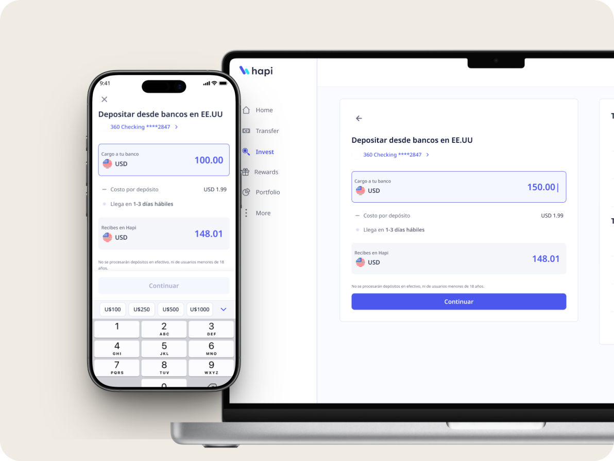
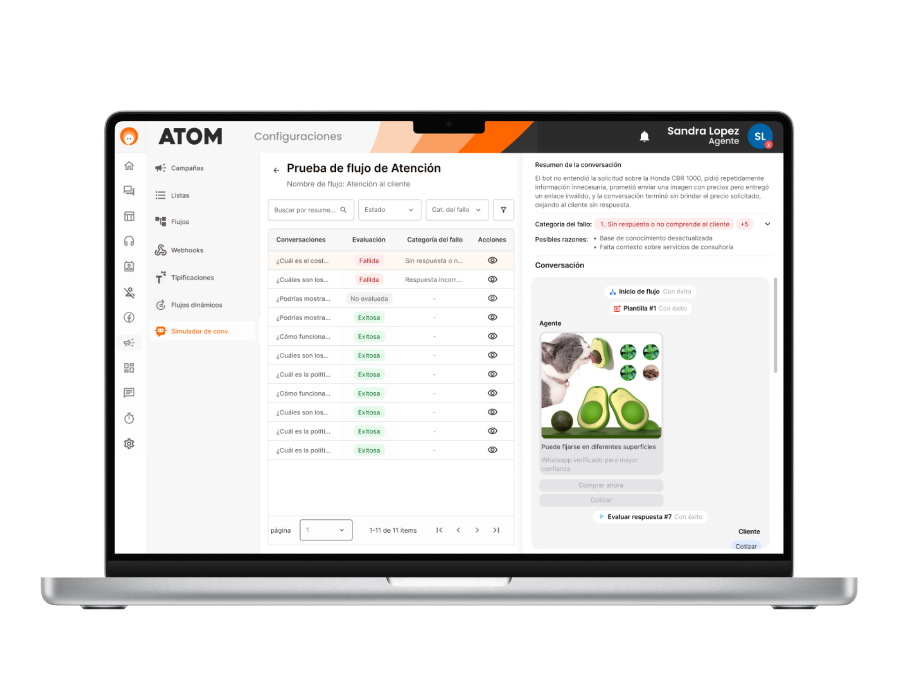
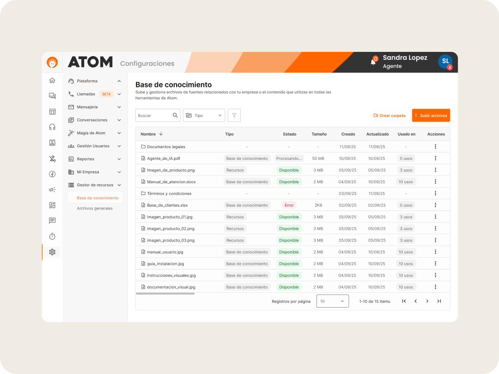

↗ Shipped
Smartons — AI flowbuilder
AI-powered workflow component replacing branched flows with prompt-based conversational agents.
AI-powered workflow component replacing branched flows with prompt-based conversational agents.
Led UX/UI for Loyalty 2.0: rank progression, cashback boosts, and Activity Points flows.

Designing trust into every step of a cross-border deposit experience for LATAM investors.
Intelligent context-aware conversational support inside a fintech app for LATAM users.
Designing the upgrade path that converts free users into paying subscribers across two segments.

Stress-test conversational flows with AI before launch — hundreds of simulated conversations across customer profiles.

A centralized, Drive-like library so multiple AI agents share one source of truth.
Full platform for pet care services — online store, service bookings, client & admin profiles, and a dashboard to manage it all. Powered by Supabase.
A mobile companion designed to help people with ADHD manage tasks, build focus, and navigate daily routines with clarity.
Product Designer & Vibecoder · El Salvador
I'm a Product UX/UI Designer with a background in illustration and a growing obsession with building what I design. I thrive on complex problems — fintech flows, AI products, and design systems that actually scale.
I bridge design and code: I architect token-based design systems, submit PRs, and believe pixel-perfect handoff starts with understanding how the code works.
I design technology products from the ground up — advocating for users, analyzing metrics, behaviors and trends, and aligning with business needs and team capabilities to bring projects to life that actually work for real people.
I'm an outdoor person at heart — walking, running, cycling and sports are a big pillar in my life. But I'm equally passionate about art, cinema, and spending time with my dog and 5 kittens.
Startups move fast. Enterprise retail doesn't wait. I've navigated both — and built an instinct for ideating, designing, and iterating at a pace that keeps up with, and sometimes outpaces, the roadmap.
I don't design for today's problem. I design for the product that will exist two years from now — self-service, scalable, handling 10× the users. Every solution is a stepping stone toward that.
I've worked inside IDEs, navigated GitHub flows, and learned how design translates to code. That lens makes every decision sharper — and means I never design the impossible to build.
New tools, emerging patterns, shifting behaviors — I don't wait for things to go mainstream before exploring them. Curiosity is how I stay ahead, and staying ahead is how I stay useful.
countries explored
I love stepping out of my comfort zone and venturing into new places. Learning about different cultures teaches me just how far I'm capable of going.
Portraits for real people, fanarts, and my own comic. Before Figma there was a sketchbook — and there still is one.
Product Designer on SaaS
Product Designer · Side Project
UX/UI Designer
UX/UI Designer
Graphic Design
Photography · Illustration · Branding · Advertising graphic design
Got a project in mind? Whether it's a complex fintech flow, an AI product, or a design system — I'd love to hear about it.